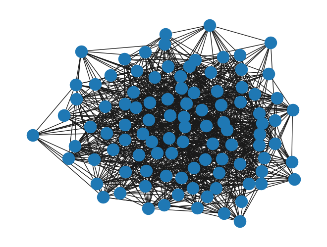
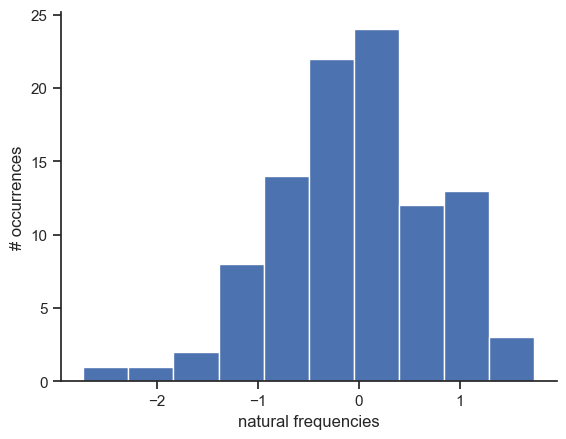
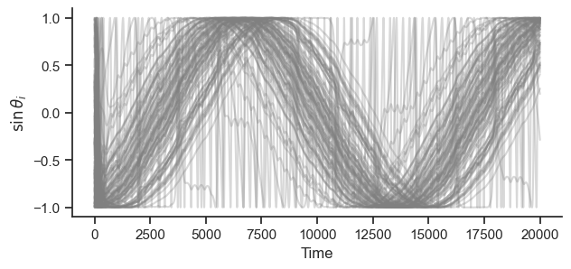
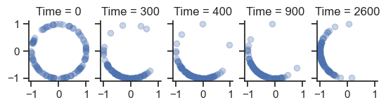
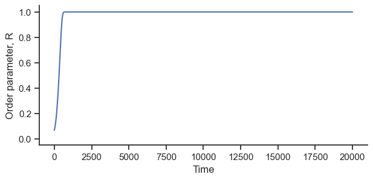
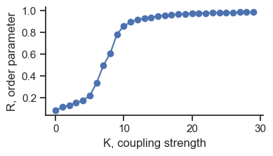

11. Synchronization#
Install the library with
pip install kuramoto
to install the package by Damicelli Fabrizio
fabridamicelli/kuramoto
import numpy as np
import matplotlib.pyplot as plt
import networkx as nx
import seaborn as sb
from kuramoto import Kuramoto, plot_phase_coherence, plot_activity
sb.set_theme(style="ticks")
11.1. Kuramoto model#
# Generate a random graph and transform into an adjacency matrix
N = 100
p = 0.2
graph_nx = nx.erdos_renyi_graph(N, p)
graph = nx.to_numpy_array(graph_nx)
nx.draw(graph_nx)

The more the frequencies are spread out, the more difficult it is to sync.
The stonger the coupling is, the easier it is to sync.
Play with the parameter values!
# we set the natural frequencies
omega = np.random.normal(loc=0, scale=1, size=N)
# and visualize them
fig, ax = plt.subplots()
ax.hist(omega)
ax.set_ylabel("# occurrences")
ax.set_xlabel("natural frequencies")
sb.despine()

# Instantiate model with parameters
K = 2
dt = 0.01
T = 200
model = Kuramoto(coupling=K, dt=dt, T=T, n_nodes=N, natfreqs=omega)
# Run simulation - output is time series for all nodes (node vs time)
phases = model.run(adj_mat=graph)
phases.shape
(100, 20000)
#plot_activity(phases)
#sb.despine()
fig, ax = plt.subplots(figsize=(7, 3))
ax.plot(np.sin(phases.T), color="grey", alpha=0.3)
ax.set_ylabel(r"$\sin \theta_i$")
ax.set_xlabel("Time")
sb.despine()
plt.show()

times = [0, 300, 400, 900, 2600]
fig, axes = plt.subplots(1, len(times), sharey=True, sharex=True)
for ax, time in zip(axes, times):
ax.set_aspect("equal")
ax.plot(np.cos(phases[:, time]), np.sin(phases[:, time]), "o", alpha=0.3)
ax.set_title(f"Time = {time}")
sb.despine()

#plot_phase_coherence(phases)
def order_parameter(phases):
"""Returns the order parameter of the oscillators over time"""
R = np.sum(np.exp(1j * phases), axis=0) / N
return np.abs(R)
fig, ax = plt.subplots(figsize=(7, 3))
R = order_parameter(phases)
ax.plot(R)
ax.set_ylabel("Order parameter, R")
ax.set_xlabel("Time")
ax.set_ylim([-0.05, 1.05])
sb.despine()

11.2. Onset of sync: phase transition#
Ks = np.arange(0, 6, 0.2)
dt = 0.01
T = 200
t_transient = int(50 / dt)
order_avg = np.zeros((len(Ks)))
for i, K in enumerate(Ks):
model = Kuramoto(coupling=K, dt=dt, T=T, n_nodes=N, natfreqs=omega)
phases = model.run(adj_mat=graph)
phases_stationary = phases[:, t_transient:]
R = order_parameter(phases_stationary).mean()
order_avg[i] = R
fig, ax = plt.subplots(figsize=(4, 2))
ax.plot(order_avg, "o-")
ax.set_ylabel("R, order parameter")
ax.set_xlabel("K, coupling strength")
sb.despine()

# Instantiate model with parameters
Ks = np.arange(0, 6, 0.1)
dt = 0.01
T = 200
t_transient = int(50 / dt)
order_avg = np.zeros(len(Ks))
for i, K in enumerate(Ks):
# instantiate model
model = Kuramoto(coupling=K, dt=dt, T=T, n_nodes=len(graph), natfreqs=omega)
# Run simulation - output is time series for all nodes (node vs time)
phases = model.run(adj_mat=graph)
phases_stationary = phases[:, t_transient:]
order_avg[i] = order_parameter(phases_stationary).mean()
fig, ax = plt.subplots(figsize=(5, 3.5))
ax.plot(Ks, order_avg, "o-")
ax.set_ylabel("R, order parameter")
ax.set_xlabel("K, coupling strength")
sb.despine()